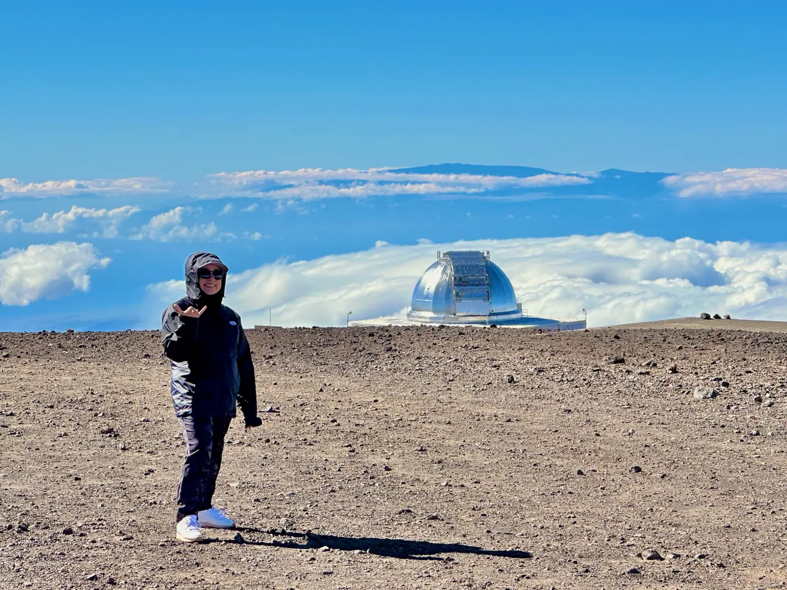
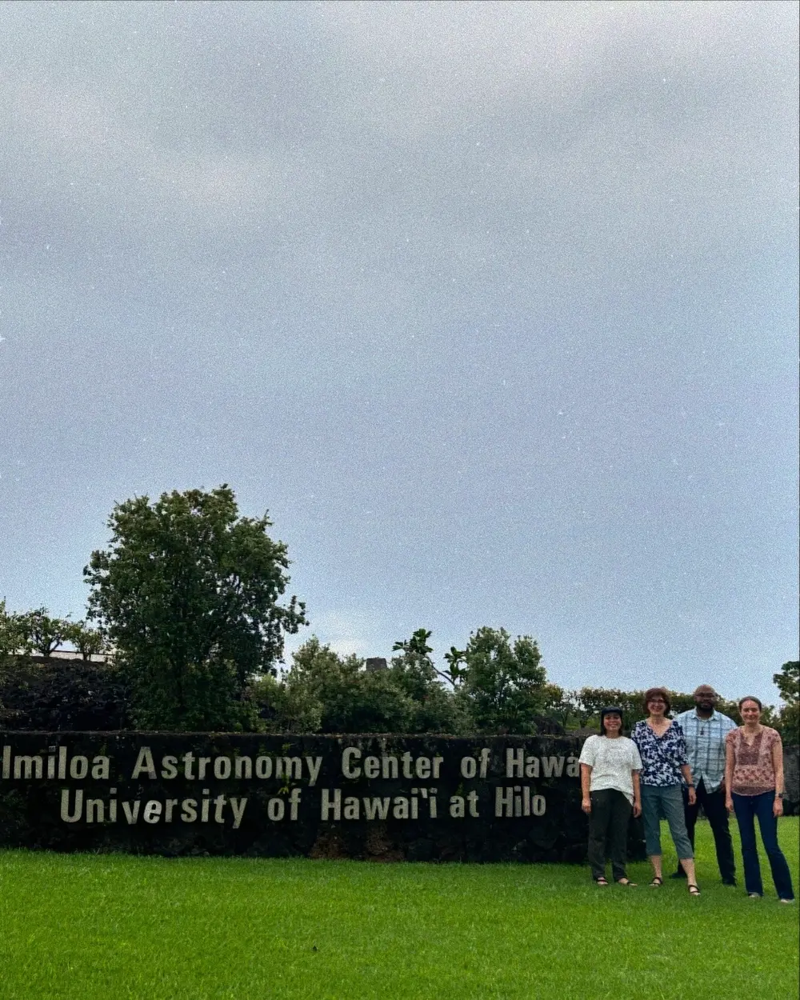

people engaged through ILN-supported programs, exhibitions, and outreach

Case study 01 · Field building
A network built to help the universe feel local.
NASA’s Informal Learning Network connects museums, libraries, science centers, and community organizations with the people, practices, and resources that help mission science travel.
Scroll to trace the system ↓
My roleStrategic lead
FY25 cohort24 partner sites
FY25 reach≈142,000 learners
ContextNASA’s Universe of Learning
FY25 evidence · A year of connection
The network is becoming durable infrastructure.
Across museums, science centers, children’s museums, and community institutions, the FY25 portfolio paired national mission science with locally trusted routes into learning.
of responding sites confident they will sustain ILN-seeded partnerships or program elements
approximate partner likelihood of using Universe of Learning resources again
of programs made explicit connections to the James Webb Space Telescope
01
The challenge
A national mission needs more than national reach.
NASA can make extraordinary knowledge available. That does not automatically make it locally meaningful, culturally responsive, or usable by the educators who meet audiences every day.
The challenge is not simply distribution. It is infrastructure: trusted relationships, room for local adaptation, ongoing professional learning, and feedback routes that let the larger system learn from the field.
The system I help steward
Knowledge moves through relationships.
01Mission knowledgeHubble · Webb · Roman
02Network infrastructureRelationships · Resources · Learning
03Local partnersMuseums · Libraries · Community groups
04Public participationContext · Wonder · Agency
02
My contribution
I work on the connective tissue.
My role sits between portfolio strategy and partner reality: making sure institutional ambition can survive contact with the places where learning actually happens.
Set direction
Guide portfolio planning and translate NASA mission priorities into coherent opportunities for informal educators.
Build relationships
Develop and sustain partnerships across museums, libraries, science centers, and community-based organizations.
Translate evidence
Turn partner needs, audience research, field trends, and evaluation findings into actionable strategy.
Make learning usable
Shape resources, professional learning, and implementation supports that partners can adapt—not merely receive.

Field note · Hawai‘i
Place is not the backdrop to learning. It is part of the knowledge.
Partnership work asks us to understand where science lives: in institutions, histories, landscapes, and relationships. Field experience keeps strategy accountable to that complexity.
03
What the network enables
One shared universe. Many local ways in.
The network’s strength is not sameness. It is the capacity to hold a shared scientific purpose while partners design for distinct communities and contexts.
Distributed capacity
Partners gain relationships, resources, and confidence that extend beyond a single event.
Local adaptation
Organizations can choose formats, stories, and entry points that make sense for their audiences.
Reciprocal learning
Partner experience informs the wider portfolio, creating a feedback loop rather than a one-way pipeline.
Durable participation
NASA science becomes part of ongoing community learning—not only a moment of attention.
Scale, with relationship at the center
142K+ learners.
24 FY25 sites.
93% sustained intent.
The numbers describe reach and durability. The deeper result is a network behaving less like a collection of isolated projects and more like infrastructure for community-centered space-science learning—especially in rural, border, urban, multilingual, and disability communities.
Reflection
Field building is the patient work of making isolated possibility become shared capacity.
The work has reinforced a principle I carry across every portfolio: participation cannot be bolted on at the end. It must be designed into the relationships, resources, and decisions that shape the system from the beginning.
Return to selected work ←